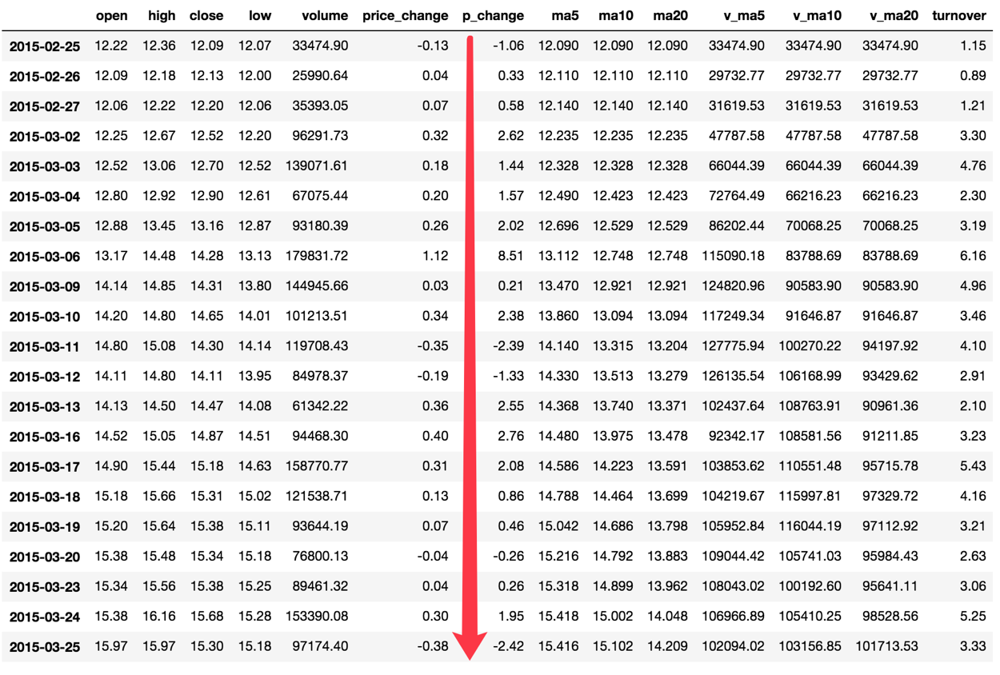

5.3 DataFrame运算
学习目标
- 目标
- 使用describe完成综合统计
- 使用max完成最大值计算
- 使用min完成最小值计算
- 使用mean完成平均值计算
- 使用std完成标准差计算
- 使用idxmin、idxmax完成最大值最小值的索引
- 使用cumsum等实现累计分析
- 应用逻辑运算符号实现数据的逻辑筛选
- 应用isin实现数据的筛选
- 应用query实现数据的筛选
- 应用add等实现数据间的加法运算
- 应用apply函数实现数据的自定义处理
- 应用
- 股票每日数据的统计
5.3.1 算术运算
- add(other)
比如进行数学运算加上具体的一个数字
data['open'].add(1)
2018-02-27 24.53
2018-02-26 23.80
2018-02-23 23.88
2018-02-22 23.25
2018-02-14 22.49
- sub(other)
如果想要得到每天的涨跌大小？求出每天 close- open价格差
# 1、筛选两列数据
close = data['close']
open1 = data['open']
# 2、收盘价减去开盘价
data['m_price_change'] = close.sub(open1)
data.head()
open high close low volume price_change p_change turnover my_price_change
2018-02-27 23.53 25.88 24.16 23.53 95578.03 0.63 2.68 2.39 0.63
2018-02-26 22.80 23.78 23.53 22.80 60985.11 0.69 3.02 1.53 0.73
2018-02-23 22.88 23.37 22.82 22.71 52914.01 0.54 2.42 1.32 -0.06
2018-02-22 22.25 22.76 22.28 22.02 36105.01 0.36 1.64 0.90 0.03
2018-02-14 21.49 21.99 21.92 21.48 23331.04 0.44 2.05 0.58 0.43
5.3.2 逻辑运算
5.3.2.1 逻辑运算符号<、 >、|、 &
- 例如筛选p_change > 2的日期数据
- data['p_change'] > 2返回逻辑结果
data['p_change'] > 2
2018-02-27 True
2018-02-26 True
2018-02-23 True
2018-02-22 False
2018-02-14 True
# 逻辑判断的结果可以作为筛选的依据
data[data['p_change'] > 2]
pen high close low volume price_change p_change turnover my_price_change
2018-02-27 23.53 25.88 24.16 23.53 95578.03 0.63 2.68 2.39 0.63
2018-02-26 22.80 23.78 23.53 22.80 60985.11 0.69 3.02 1.53 0.73
2018-02-23 22.88 23.37 22.82 22.71 52914.01 0.54 2.42 1.32 -0.06
2018-02-14 21.49 21.99 21.92 21.48 23331.04 0.44 2.05 0.58 0.43
2018-02-12 20.70 21.40 21.19 20.63 32445.39 0.82 4.03 0.81 0.49
- 完成一个多个逻辑判断， 筛选p_change > 2并且open > 15
data[(data['p_change'] > 2) & (data['open'] > 15)]
open high close low volume price_change p_change turnover my_price_change
2017-11-14 28.00 29.89 29.34 27.68 243773.23 1.10 3.90 6.10 1.34
2017-10-31 32.62 35.22 34.44 32.20 361660.88 2.38 7.42 9.05 1.82
2017-10-27 31.45 33.20 33.11 31.45 333824.31 0.70 2.16 8.35 1.66
2017-10-26 29.30 32.70 32.41 28.92 501915.41 2.68 9.01 12.56 3.11
5.3.2.2 逻辑运算函数
- query(expr)
- expr:查询字符串
通过query使得刚才的过程更加方便简单
data.query("p_change > 2 & turnover > 15")
- isin(values)
例如判断'turnover'是否为4.19, 2.39
# 可以指定值进行一个判断，从而进行筛选操作
data[data['turnover'].isin([4.19, 2.39])]
open high close low volume price_change p_change turnover my_price_change
2018-02-27 23.53 25.88 24.16 23.53 95578.03 0.63 2.68 2.39 0.63
2017-07-25 23.07 24.20 23.70 22.64 167489.48 0.67 2.91 4.19 0.63
2016-09-28 19.88 20.98 20.86 19.71 95580.75 0.98 4.93 2.39 0.98
2015-04-07 16.54 17.98 17.54 16.50 122471.85 0.88 5.28 4.19 1.00
5.3.3 统计运算
5.3.3.1 describe()
综合分析: 能够直接得出很多统计结果,count, mean, std, min, max 等
# 计算平均值、标准差、最大值、最小值
data.describe()

5.3.3.2 统计函数
Numpy当中已经详细介绍，在这里我们演示min(最小值), max(最大值), mean(平均值), median(中位数), var(方差), std(标准差),mode(众数)结果,
count |
Number of non-NA observations |
|---|---|
sum |
Sum of values |
mean |
Mean of values |
median |
Arithmetic median of values |
min |
Minimum |
max |
Maximum |
mode |
Mode |
abs |
Absolute Value |
prod |
Product of values |
std |
Bessel-corrected sample standard deviation |
var |
Unbiased variance |
idxmax |
compute the index labels with the maximum |
idxmin |
compute the index labels with the minimum |
对于单个函数去进行统计的时候，坐标轴还是按照这些默认为“columns” (axis=0, default)，如果要对行“index” 需要指定(axis=1)
- max()、min()
# 使用统计函数：0 代表列求结果， 1 代表行求统计结果
data.max(0)
open 34.99
high 36.35
close 35.21
low 34.01
volume 501915.41
price_change 3.03
p_change 10.03
turnover 12.56
my_price_change 3.41
dtype: float64
- std()、var()
# 方差
data.var(0)
open 1.545255e+01
high 1.662665e+01
close 1.554572e+01
low 1.437902e+01
volume 5.458124e+09
price_change 8.072595e-01
p_change 1.664394e+01
turnover 4.323800e+00
my_price_change 6.409037e-01
dtype: float64
# 标准差
data.std(0)
open 3.930973
high 4.077578
close 3.942806
low 3.791968
volume 73879.119354
price_change 0.898476
p_change 4.079698
turnover 2.079375
my_price_change 0.800565
dtype: float64
- median()：中位数
中位数为将数据从小到大排列，在最中间的那个数为中位数。如果没有中间数，取中间两个数的平均值。
df = pd.DataFrame({'COL1' : [2,3,4,5,4,2],
'COL2' : [0,1,2,3,4,2]})
df.median()
COL1 3.5
COL2 2.0
dtype: float64
- idxmax()、idxmin()
# 求出最大值的位置
data.idxmax(axis=0)
open 2015-06-15
high 2015-06-10
close 2015-06-12
low 2015-06-12
volume 2017-10-26
price_change 2015-06-09
p_change 2015-08-28
turnover 2017-10-26
my_price_change 2015-07-10
dtype: object
# 求出最小值的位置
data.idxmin(axis=0)
open 2015-03-02
high 2015-03-02
close 2015-09-02
low 2015-03-02
volume 2016-07-06
price_change 2015-06-15
p_change 2015-09-01
turnover 2016-07-06
my_price_change 2015-06-15
dtype: object
5.3.4 累计统计函数
| 函数 | 作用 |
|---|---|
cumsum |
计算前1/2/3/…/n个数的和 |
cummax |
计算前1/2/3/…/n个数的最大值 |
cummin |
计算前1/2/3/…/n个数的最小值 |
cumprod |
计算前1/2/3/…/n个数的积 |
那么这些累计统计函数怎么用？

以上这些函数可以对series和dataframe操作
这里我们按照时间的从前往后来进行累计
- 排序
# 排序之后，进行累计求和
data = data.sort_index()
- 对p_change进行求和
stock_rise = data['p_change']
# plot方法集成了前面直方图、条形图、饼图、折线图
stock_rise.cumsum()
2015-03-02 2.62
2015-03-03 4.06
2015-03-04 5.63
2015-03-05 7.65
2015-03-06 16.16
2015-03-09 16.37
2015-03-10 18.75
2015-03-11 16.36
2015-03-12 15.03
2015-03-13 17.58
2015-03-16 20.34
2015-03-17 22.42
2015-03-18 23.28
2015-03-19 23.74
2015-03-20 23.48
2015-03-23 23.74
那么如何让这个连续求和的结果更好的显示呢？

如果要使用plot函数，需要导入matplotlib.
import matplotlib.pyplot as plt
# plot显示图形
stock_rise.cumsum().plot()
# 需要调用show，才能显示出结果
plt.show()
关于plot，稍后会介绍API的选择
5.3.4 自定义运算
- apply(func, axis=0)
- func:自定义函数
- axis=0:默认是列，axis=1为行进行运算
- 定义一个对列，最大值-最小值的函数
data[['open', 'close']].apply(lambda x: x.max() - x.min(), axis=0)
open 22.74
close 22.85
dtype: float64
5.3.5 总结
- 掌握算数运算
- 掌握统计运算
- 掌握逻辑运算
- 掌握apply函数的使用